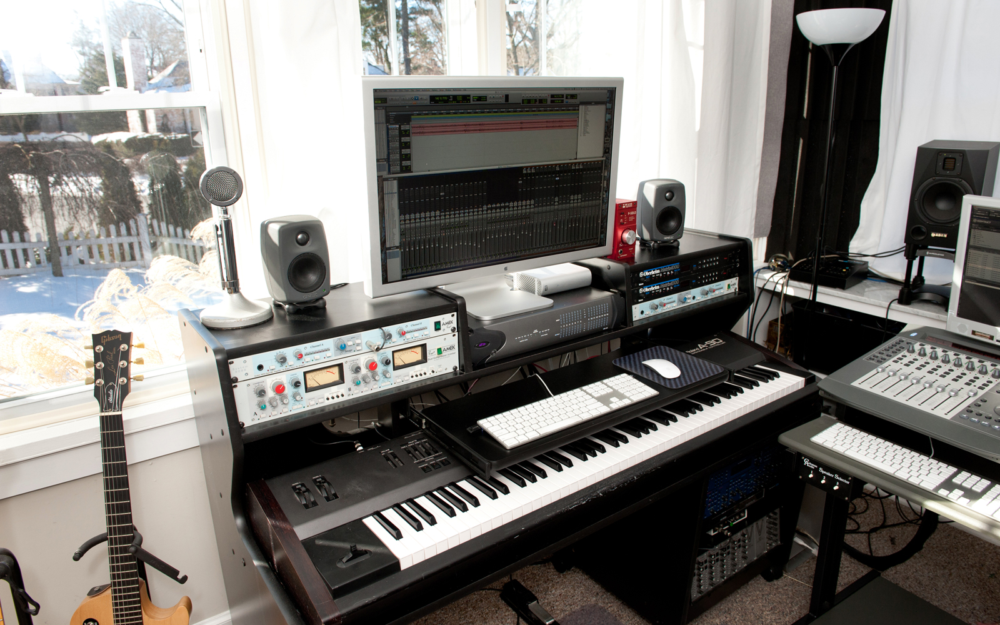

Stephen Skinner Music
credits
studio
about
contact

Steve Skinner is a professional composer, arranger and producer. His instrument of choice is keyboard (but mostly computer). You can view his work
here.